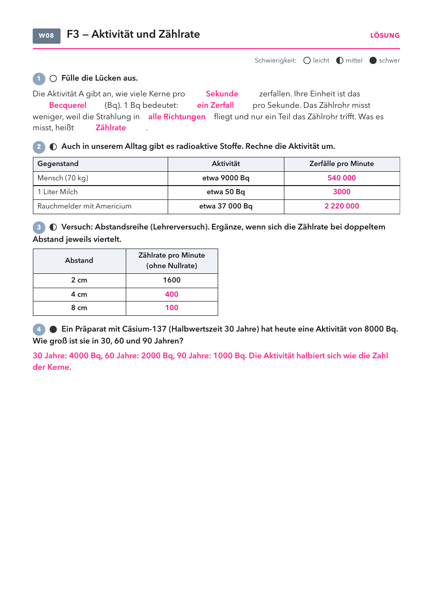

Klasse 10 · Physik · W08 (Woche ab 09.11.2026) · Leitfrage 3
| Material | Anzahl | Hinweis |
|---|---|---|
| γ-Präparat | 1 | nur Lehrkraft, nach RiSU |
| Geiger-Müller-Zählrohr mit Zählgerät | 1× | |
| Lineal oder Maßband | 1× | |
| Diätsalz (Kaliumchlorid) | 1 kg | freiwillig, aus dem Supermarkt |
| Material | Anzahl | Hinweis |
|---|---|---|
| nicht nötig | ||

| Gegenstand | Aktivität | woher |
|---|---|---|
| Mensch (70 kg) | etwa 9000 Bq | vor allem Kalium-40 und Kohlenstoff-14 aus der Nahrung |
| 1 Liter Milch | etwa 50 Bq | Kalium-40, ganz natürlich |
| Diätsalz (1 kg Kaliumchlorid) | etwa 16 000 Bq | Das Zählrohr zeigt davor mehr als die Nullrate. |
| Rauchmelder mit Americium | etwa 37 000 Bq | in Deutschland heute kaum noch im Einsatz |
Lösung: Lücken: Sekunde, Becquerel, ein Zerfall, alle Richtungen, Zählrate. 540 000, 3000, 2 220 000 Zerfälle pro Minute. Abstand: 1600, 400, 100. Cäsium: 4000, 2000, 1000 Bq.